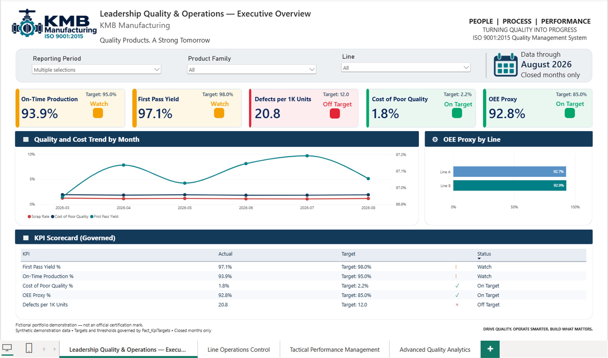
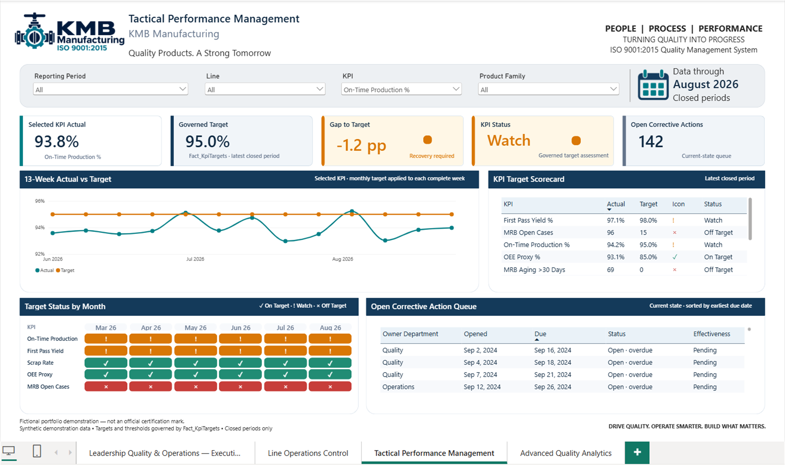
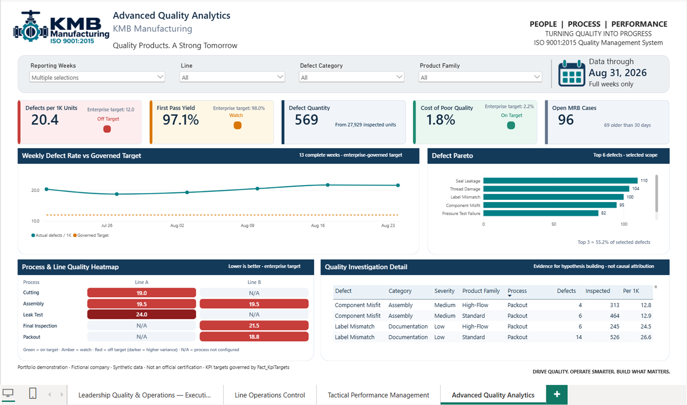

▥
BI Dashboards
Decision-ready reporting that brings your production, quality, sales, or finance data into one clear view.
Business intelligence for practical decisions
KMB Data Bridge helps small and mid-sized businesses gain clarity from their data—so leaders can improve performance, quality, and growth with confidence.
Written-first communication for clear requirements and full traceability.
How I can help
Decision-ready reporting that brings your production, quality, sales, or finance data into one clear view.
Find trends, root causes, bottlenecks, and opportunities hidden in the data you already have.
Build practical data foundations that make AI useful, understandable, and connected to business goals.
Selected work
Demonstration projects using synthetic data to show how decisions can be made clearer and faster.

Operations & quality
A governed view of production, OEE, downtime, quality, and corrective actions.

Sustainability
Explore energy patterns and uncover opportunities for better operating efficiency.

Process improvement
Make quality trends and defect patterns visible before they become larger problems.
About Manuel Marín
Manuel Marín is a business-process professional focused on quality, productivity, and operational improvement. His work connects business intelligence, data analytics, and continuous-improvement thinking to help leaders see what matters and act on it.
Through KMB Data Bridge, he brings a pragmatic approach to dashboards, KPI analysis, and AI-ready data—especially for organizations that need useful answers, not unnecessary complexity.
Connect on LinkedIn ↗Written first. Clear from the start.
Share your situation, objective, or challenge. Your message becomes the written starting point for a traceable, focused response.
manue@sigma-emprende.com